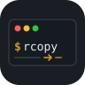

除外付きクロスプラットフォーム copy
WindowsmacOSLinux
gitignore 風の --exclude / --include が全 OS で同じに効く再帰コピー。
--dry-run で実行前にプレビュー。
Windows の Copy-Item -Recurse -Exclude 破綻・robocopy・rsync の隙間を、純 Python の 1 コマンドで埋めます。依存は typer だけ。
Windows の Copy-Item -Recurse -Exclude はサブディレクトリに除外が効かないことで有名。rcopy は全階層で正しく除外し、node_modules ひとつ指定すれば配下まるごと消えます。
--dry-run で安全にコピー前に src -> dst をすべて列挙してプレビュー。ディスクには一切触れません。「ちゃんと除外できているか」を実行前に確認できます。
*.log（任意階層）、build/（ディレクトリのみ）、src/*.tmp（アンカー）、** でディレクトリ跨ぎ。普段の .gitignore の感覚そのままです。
--exclude-from で .gitignore を再利用既存の .gitignore をそのまま除外ルールとして読み込み。プロジェクトのバックアップが一発で取れます。
--include 再包含 ／ --no-clobber除外に引っかかったファイルを --include で拾い直す。--no-clobber で既存ファイルを上書きせずスキップ。--no-recurse でトップレベルのみ。
依存は typer のみ、コピーは標準ライブラリ。robocopy も rsync も要らず、Windows / macOS / Linux で同じ挙動です。
手軽に：uv tool で 1 コマンド
uv tool install "git+https://github.com/ymatsuza/rcopy.git"開発する：クローンして起動
git clone https://github.com/ymatsuza/rcopy.git && cd rcopy
uv sync
uv run rcopy --helpuv が入っていない場合は astral.sh/uv を参照してください。
# gitignore 風の除外。実行前にプレビュー rcopy ./project ./backup -e node_modules -e "*.log" -e "build/" --dry-run # 問題なければそのまま実行（-v で各コピーを表示） rcopy ./project ./backup -e node_modules -e "*.log" -e "build/" -v
# 既存の .gitignore をそのまま除外ルールに rcopy ./project ./backup --exclude-from .gitignore # 除外に引っかかった特定ファイルだけ拾い直す rcopy ./src ./dst -e "*.log" -i important.log
# 既存ファイルは上書きしない / トップレベルのみ rcopy ./src ./dst --no-clobber rcopy ./src ./dst --no-recurse # 複数のソースをまとめてディレクトリへ rcopy a.txt b.txt ./out/
*.log（スラッシュなし）— 任意の階層の basename に一致build/（末尾スラッシュ）— ディレクトリのみに一致src/*.tmp ・ /dist（スラッシュ含む）— ソースルートにアンカー** はディレクトリを跨ぐ。*・? は / を跨がない--include は除外より優先（剪定済みディレクトリ内は gitignore 同様に再包含不可）終了コードは 0＝正常 / 1＝一部コピー失敗 / 2＝使い方エラー。スクリプトや CI から扱えます。
Cross-platform copy with gitignore-style excludes
WindowsmacOSLinux
Recursive copy with gitignore-style --exclude / --include that work
the same on every OS, plus a --dry-run preview.
Fills the gaps in Windows Copy-Item -Recurse -Exclude, robocopy, and
rsync — in one pure-Python command. One dependency: typer.
Windows’ Copy-Item -Recurse -Exclude is famous for not applying excludes to subdirectories. rcopy excludes correctly at every depth — name node_modules once and the whole subtree is gone.
--dry-runPreview every src -> dst before touching the disk. See exactly what would be copied — and confirm your excludes are right — before you commit to it.
*.log (any depth), build/ (directories only), src/*.tmp (anchored), and ** across directories. It’s the .gitignore mental model you already have.
.gitignore--exclude-from reads any pattern file — point it at your project’s .gitignore and back the whole thing up in one shot.
--include & --no-clobberRe-include a file an exclude would drop with --include. Skip existing files with --no-clobber. Copy only the top level with --no-recurse.
Just typer; copying uses the standard library. No robocopy, no rsync — the same behaviour on Windows, macOS, and Linux.
Quick: one command with uv tool
uv tool install "git+https://github.com/ymatsuza/rcopy.git"For development: clone and run
git clone https://github.com/ymatsuza/rcopy.git && cd rcopy
uv sync
uv run rcopy --helpDon’t have uv yet? See astral.sh/uv.
# gitignore-style excludes; preview before writing rcopy ./project ./backup -e node_modules -e "*.log" -e "build/" --dry-run # Looks good? Run it (-v prints each copy) rcopy ./project ./backup -e node_modules -e "*.log" -e "build/" -v
# Use your existing .gitignore as the exclude rules rcopy ./project ./backup --exclude-from .gitignore # Pull one excluded file back in rcopy ./src ./dst -e "*.log" -i important.log
# Never overwrite existing files / top level only rcopy ./src ./dst --no-clobber rcopy ./src ./dst --no-recurse # Multiple sources into a directory rcopy a.txt b.txt ./out/
*.log (no slash) — matches that basename at any depthbuild/ (trailing slash) — matches directories onlysrc/*.tmp / /dist (contains a slash) — anchored to the source root** crosses directories; * and ? do not cross /--include overrides excludes (but cannot re-include inside a pruned directory — same as gitignore)Exit codes: 0 success / 1 some files failed / 2 usage error — scriptable and CI-friendly.
rcopy is a free, open-source tool built in personal time. Sponsorships are greatly appreciated.